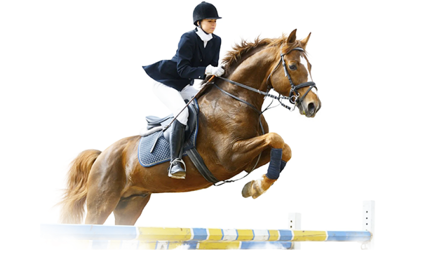

О нашем клубе
- 
-
-
1100+
Довольный посетителей за последний год
-
50+
Проведенных мероприятий за 6 месяцев
-
20+
Выпущенных профессиональных спортсменов за 1 год
-
15+
Регулярный занятий в неделю с профессиональными наставниками
Занятия проводятся индивидуально и в группах, стоимость также будет зависеть от ваших навыков и умений. Более выгодные условия предусмотрены для регулярных занятий при покупке абонементов. Для тех, кто хочет отточить своё мастерство, разработаны программы по специализации (конкур, выездка и другие), участие в соревнованиях и чемпионатах. Для самых маленьких любителей лошадей действуют пони-клубы, где ребята учатся ухаживать за животными и ездить на милых и добрых пони.
-